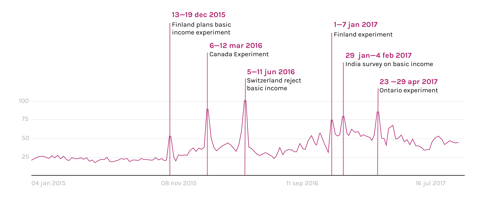
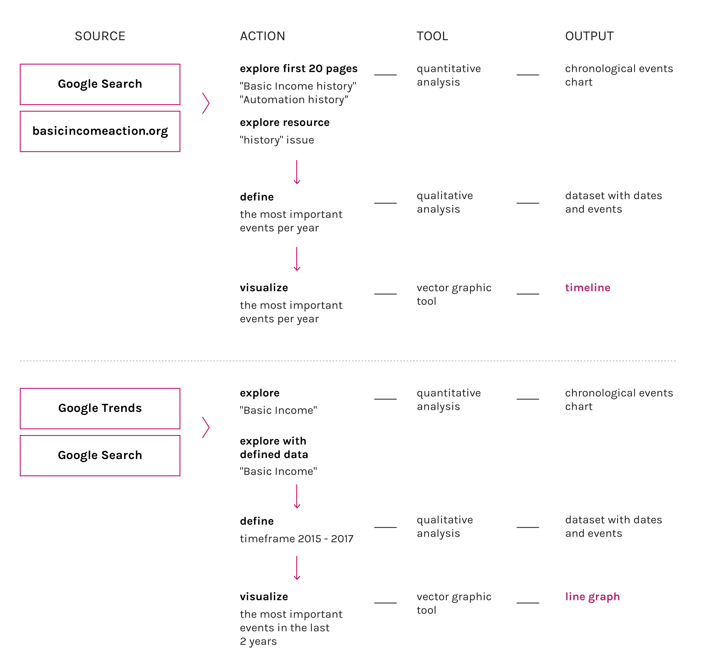

Description
The timeline traces the evolution of the topic and shows that it is born and developed in the modern history concurrently the first industrial revolution. The debate has grown in history up to the contemporary age. The graph highlights the main events of the story of UBI confronting them with the main events in the story of automation.

The research of the term "basic Income" on Google was pretty much stable in time, until 2015 when The Finnish Social Insurance Institution, also known as Kela, has begun to work on a proposal that would guarantee a basic income to every citizen. That proposal was finally turn into an experiment that started two years later, in 2017.
The research on Google started to increased from that moment, it’s clear from the trend line that every peak is caused by a public discussion around the launch of a pilot experiment or by a debate around the feasibility of basic income in a particular state. We can deduce that there is not a global concern around the topic of basic income, but there is much more interest in those countries that are discussing about it.
The most popular events were defined as a result of Google Trends research. Explore the most popular activity of this topic in Google Search it’s possible to see the most important events that happened at current time in the world.
Protocol
To make the timeline it was necessary to make a chart of the most important events in the history of UBI, comparing data from wikipedia pages and basicincomeaction.com trend The Google trend graph wants to show the growth of the debate in last years
Data
Timestamp: 01/12/2016 - 05/12/2016
Data source: GoogleTrends
Download data (2kB)
Starting from Google search in history topic through we arrived to more specific resource such as basicincome.org. Here was easy to define the most meaningful persons and events participated in creating the defenition of basic income. After the general research take a place to identify the highest spiks in google trends for last years. It’s also important for the comparing with work automaton in the next steps of our project.